Workshop Development - Pipelines In this section, you will learn how to use a Tekton pipeline resource and trigger the Pipeline to run. The Pipeline will first clone the git repository source code of the vote-api and vote-ui repositories. The Pipeline will then build the application and push the image to the internal image registry. We’ll also later add a webhook to the vote-ui to trigger when a commit is made to the Git repository. Finally, the Pipeline will update the deployment in the vote-app-gitops repository with the new image. Viewing the pipelines Let’s use the OpenShift Console to view the pipelines created for you. Within the Developer perspective of the OpenShift Console, click on the Pipelines link in the left navigation menu. You can also use this link to head to the Pipelines page directly. 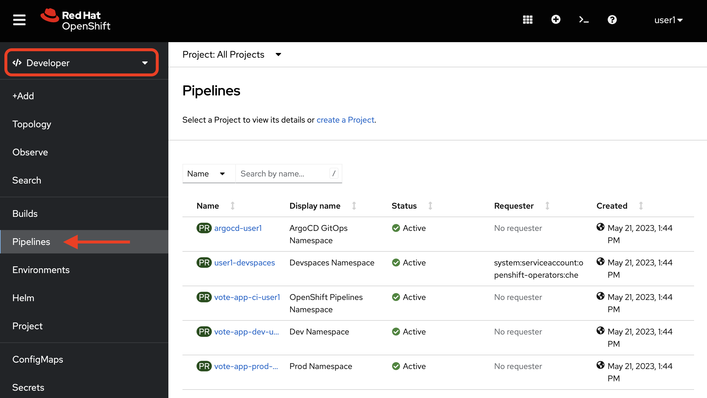 Here, we will select the vote-app-ci-%USERID% project, where the pipelines have been created. This section details all the pipelines we’ll be using in the workshop, details about the last pipeline run, the status of the tasks, and more relevant details about the Pipeline. You should see three pipelines, promote-to-prod, vote-app-api-pipeline, and vote-app-ui-pipeline. Before we start the pipelines, let’s look at one of the pipeline contents. Click on the vote-app-api-pipeline pipeline to view the pipeline details. Select YAML to view the pipeline definition in YAML format. You should see the pipeline definition, along with the tasks that are defined in the Pipeline. 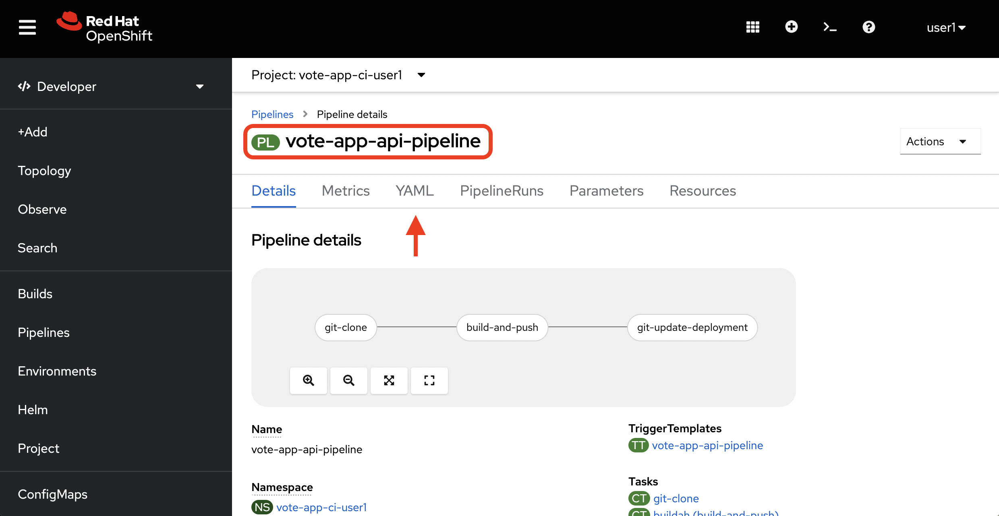 This Pipeline YAML defines the tasks to be run in the Pipeline and also defines the parameters used in the Pipeline, such as the git repository URL, the image name, and more. 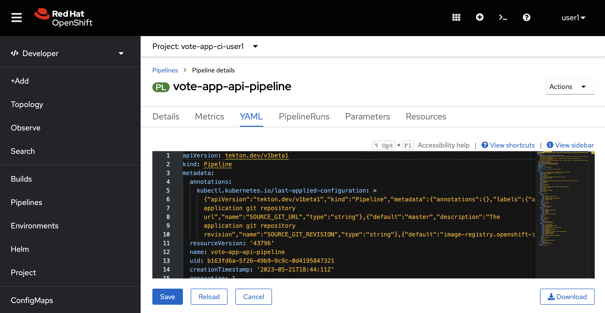 We can also view the pipeline content below. The last YAML definition is a task that helps to bundle multiple actions together, including cloning the git repository, updating image digests, and committing changes. vote-app-api-pipeline Details apiVersion: tekton.dev/v1beta1 kind: Pipeline metadata: name: vote-app-api-pipeline namespace: vote-app-ci-%USERID% spec: params: - name: SOURCE_GIT_URL type: string description: The application git repository url default: 'http://gitea.gitea.svc:3000/%USERID%/pipelines-vote-api' - name: SOURCE_GIT_REVISION type: string default: master description: The application git repository revision - default: image-registry.openshift-image-registry.svc:5000/vote-app-dev-%USERID%/vote-api name: IMAGE_NAME type: string - default: . name: PATH_CONTEXT type: string - default: 'http://gitea.gitea.svc:3000/%USERID%/vote-app-gitops' name: CONFIG_GIT_REPO type: string - default: main name: CONFIG_GIT_REVISION type: string workspaces: - name: app-source tasks: - name: git-clone taskRef: kind: ClusterTask name: git-clone params: - name: url value: $(params.SOURCE_GIT_URL) - name: revision value: $(params.SOURCE_GIT_REVISION) - name: deleteExisting value: 'true' workspaces: - name: output workspace: app-source - name: build-and-push params: - name: IMAGE value: $(params.IMAGE_NAME) - name: TLSVERIFY value: "false" - name: CONTEXT value: $(params.PATH_CONTEXT) runAfter: - git-clone taskRef: kind: ClusterTask name: buildah workspaces: - name: source workspace: app-source - name: git-update-deployment params: - name: GIT_REPOSITORY value: $(params.CONFIG_GIT_REPO) - name: CURRENT_IMAGE value: quay.io/bluesman/vote-api:latest - name: NEW_IMAGE value: $(params.IMAGE_NAME) - name: NEW_DIGEST value: $(tasks.build-and-push.results.IMAGE_DIGEST) - name: KUSTOMIZATION_PATH value: environments/dev - name: GIT_REF value: $(params.CONFIG_GIT_REVISION) runAfter: - build-and-push taskRef: kind: Task name: git-update-deployment workspaces: - name: workspace workspace: app-source vote-app-ui-pipeline Details apiVersion: tekton.dev/v1beta1 kind: Pipeline metadata: name: vote-app-ui-pipeline namespace: vote-app-ci-%USERID% spec: params: - name: SOURCE_GIT_URL type: string description: The application git repository url default: 'http://gitea.gitea.svc:3000/%USERID%/pipelines-vote-ui' - name: SOURCE_GIT_REVISION type: string default: master description: The application git repository revision - default: image-registry.openshift-image-registry.svc:5000/vote-app-dev-%USERID%/vote-ui name: IMAGE_NAME type: string - default: . name: PATH_CONTEXT type: string - default: 'http://gitea.gitea.svc:3000/%USERID%/vote-app-gitops' name: CONFIG_GIT_REPO type: string - default: main name: CONFIG_GIT_REVISION type: string workspaces: - name: app-source tasks: - name: git-clone taskRef: kind: ClusterTask name: git-clone params: - name: url value: $(params.SOURCE_GIT_URL) - name: revision value: $(params.SOURCE_GIT_REVISION) - name: deleteExisting value: 'true' workspaces: - name: output workspace: app-source - name: build-and-push params: - name: IMAGE value: $(params.IMAGE_NAME) - name: TLSVERIFY value: "false" - name: CONTEXT value: $(params.PATH_CONTEXT) runAfter: - git-clone taskRef: kind: ClusterTask name: buildah workspaces: - name: source workspace: app-source - name: git-update-deployment params: - name: GIT_REPOSITORY value: $(params.CONFIG_GIT_REPO) - name: CURRENT_IMAGE value: quay.io/bluesman/vote-ui:latest - name: NEW_IMAGE value: $(params.IMAGE_NAME) - name: NEW_DIGEST value: $(tasks.build-and-push.results.IMAGE_DIGEST) - name: KUSTOMIZATION_PATH value: environments/dev - name: GIT_REF value: $(params.CONFIG_GIT_REVISION) runAfter: - build-and-push taskRef: kind: Task name: git-update-deployment workspaces: - name: workspace workspace: app-source promote-to-prod Details apiVersion: tekton.dev/v1beta1 kind: Pipeline metadata: name: promote-to-prod namespace: vote-app-ci-%USERID% spec: params: - default: 'vote-app-dev-%USERID%/vote-ui:latest' name: SOURCE_IMAGE type: string - default: 'vote-app-prod-%USERID%/vote-ui:prod' name: DEST_IMAGE type: string - default: 'http://gitea.gitea.svc:3000/%USERID%/vote-app-gitops' name: CONFIG_GIT_REPO type: string - default: main name: CONFIG_GIT_REVISION type: string - default: >- image-registry.openshift-image-registry.svc:5000/vote-app-prod-%USERID%/vote-ui name: IMAGE_NAME type: string tasks: - name: tag-to-prod params: - name: SCRIPT value: oc tag $(params.SOURCE_IMAGE) $(params.DEST_IMAGE) - name: VERSION value: latest taskRef: kind: ClusterTask name: openshift-client - name: image-tag-to-digest params: - name: image_dest_url value: $(params.IMAGE_NAME) - name: image_dest_tag value: prod runAfter: - tag-to-prod taskRef: kind: Task name: image-tag-to-digest - name: git-update-deployment params: - name: GIT_REPOSITORY value: $(params.CONFIG_GIT_REPO) - name: GIT_REF value: $(params.CONFIG_GIT_REVISION) - name: CURRENT_IMAGE value: quay.io/bluesman/vote-ui:latest - name: NEW_IMAGE value: $(params.IMAGE_NAME) - name: NEW_DIGEST value: $(tasks.image-tag-to-digest.results.image_digest) - name: KUSTOMIZATION_PATH value: environments/prod runAfter: - image-tag-to-digest taskRef: kind: Task name: git-update-deployment workspaces: - name: workspace workspace: app-source workspaces: - name: app-source git-update-deployment-task Details apiVersion: tekton.dev/v1beta1 kind: Task metadata: annotations: tekton.dev/pipelines.minVersion: 0.12.1 tekton.dev/tags: git name: git-update-deployment namespace: vote-app-ci-%USERID% labels: app.kubernetes.io/version: '0.2' operator.tekton.dev/provider-type: community spec: description: >- This Task can be used to update image digest in a Git repo using kustomize. It requires a secret with credentials for accessing the git repo. params: - name: GIT_REPOSITORY type: string - name: GIT_REF type: string - name: CURRENT_IMAGE type: string - name: NEW_IMAGE type: string - name: NEW_DIGEST type: string - name: KUSTOMIZATION_PATH type: string results: - description: The commit SHA name: commit steps: - image: 'docker.io/alpine/git:v2.26.2' name: git-clone resources: {} script: > rm -rf git-update-digest-workdir git clone $(params.GIT_REPOSITORY) -b $(params.GIT_REF) git-update-digest-workdir workingDir: $(workspaces.workspace.path) - image: 'quay.io/wpernath/kustomize-ubi:latest' name: update-digest resources: {} script: > cd git-update-digest-workdir/$(params.KUSTOMIZATION_PATH) kustomize edit set image $(params.CURRENT_IMAGE)=$(params.NEW_IMAGE)@$(params.NEW_DIGEST) echo "##########################" echo "### kustomization.yaml ###" echo "##########################" cat kustomization.yaml workingDir: $(workspaces.workspace.path) - image: 'docker.io/alpine/git:v2.26.2' name: git-commit resources: {} script: | cd git-update-digest-workdir git config user.email "tektonbot@redhat.com" git config user.name "My Tekton Bot" git status git add $(params.KUSTOMIZATION_PATH)/kustomization.yaml git commit -m "[ci] Image digest updated" git push RESULT_SHA="$(git rev-parse HEAD | tr -d '\n')" EXIT_CODE="$?" if [ "$EXIT_CODE" != 0 ] then exit $EXIT_CODE fi # Make sure we don't add a trailing newline to the result! echo -n "$RESULT_SHA" > $(results.commit.path) workingDir: $(workspaces.workspace.path) workspaces: - description: The workspace consisting of maven project. name: workspace Starting the vote-app-api pipeline Let’s start these pipelines by using a PipelineRun, which is a custom resource that allows you to start a pipeline. This PipelineRun will start the vote-app-api-pipeline pipeline, which will build the vote-api image, and push it to the local registry. From the Pipelines view, select the vote-app-api-pipeline pipeline. Here, you can review the pipeline steps and see what each step is doing. You can also see the pipeline resources that are being used. 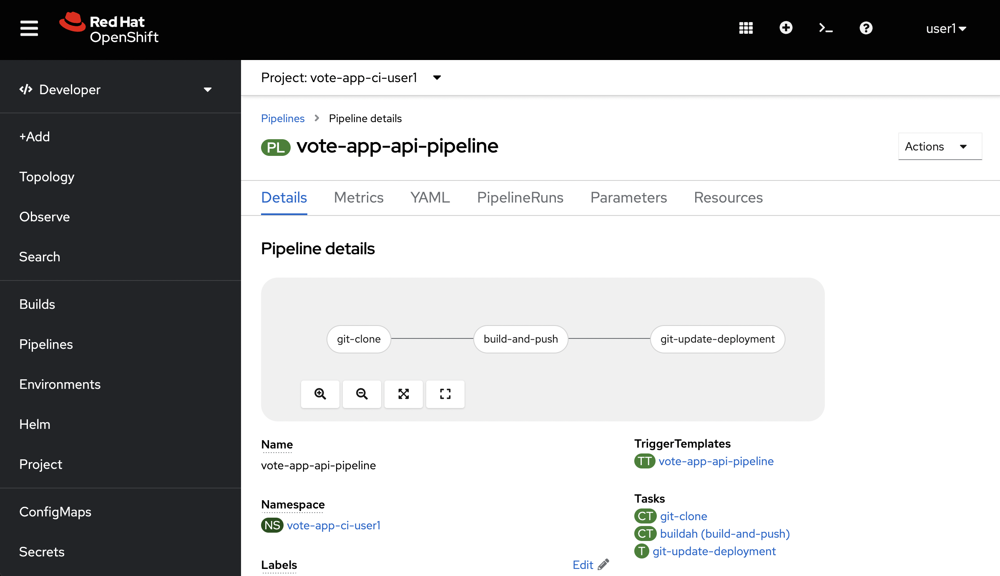 For reference, here are the pipeline steps: git-clone: This step clones the local Git repository that contains the source code for the application. We’re able to do so because of a gitea-gitops secret that was created for you. This secret contains the username and password to access the Gitea repository. build-and-push: This step builds the image and pushes it to the internal OpenShift registry. The image name is passed in as a parameter. git-update-deployment: This final step updates the deployment manifests in the Git repository. Now, let’s start the Pipeline. Click on the top-right Actions then Start button to start the Pipeline. You will be prompted to enter the values for the pipeline parameters, however the default values are already set for you. This includes the source Git repository, image name to build, and GitOps manifest repository. 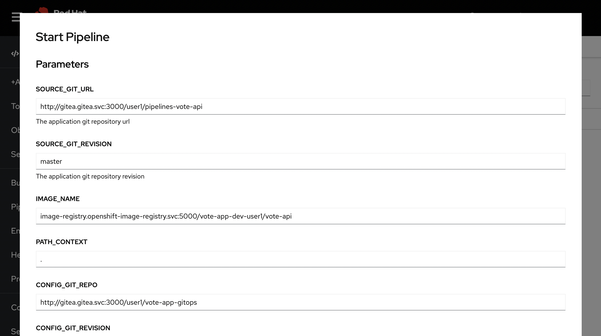 You’ll still need to select a workspace, so scroll to the bottom of the form, select Persistent Volume Claim, and choose the workspace-api-app-source PVC. This Persistent Volume Claim (PVC) workspace gives us persistent storage that the Pipeline can access even in a containerized environment. Now, click on the Start button. 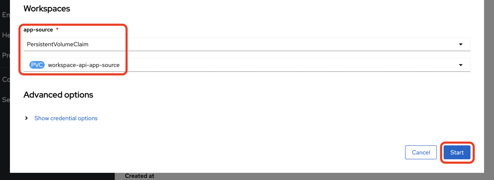 Now that the vote-app-api pipeline has been started, we can view it in action from the PipelineRuns view. We’ll need to wait for this first PipelineRun to finish before we can start the vote-ui-app-pipeline pipeline, which should take about 1-2 minutes. 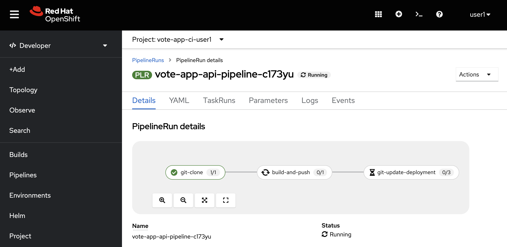 Starting the vote-app-ui pipeline With the vote-app-api-pipeline PipelineRun completed, we can now start the vote-ui-app-pipeline pipeline. Let’s repeat the same steps for this other Pipeline, first selecting it from the Pipelines view. Here, we can go ahead and start the Pipeline. The tasks are essentially the same as the vote-app-api, so we can click the top-right Actions then Start button to start the Pipeline. 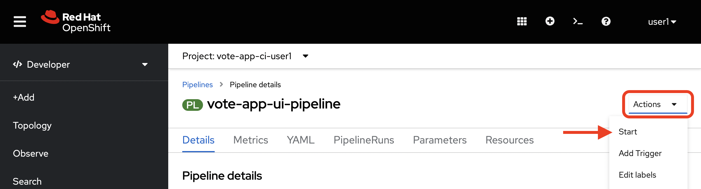 You’ll notice that the only change here is the difference in the source Git repository and image name to build. 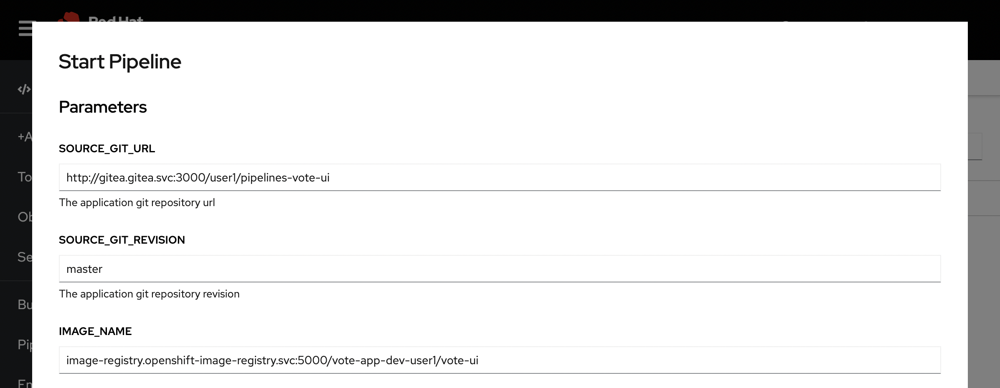 Although the default values are already set for you, you’ll still need to select a workspace, so select Persistent Volume Claim and choose the workspace-ui-app-source PVC. Now, click on the Start button. 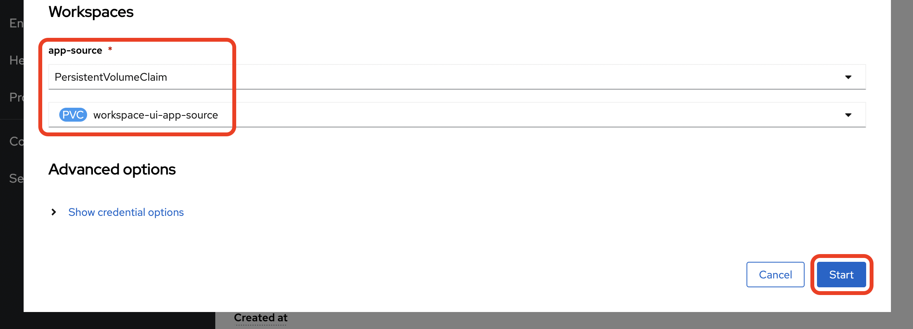 Now that the vote-app-ui pipeline has been started, let’s go ahead and check the status of this Pipeline. We should be at the PipelineRuns view, and after a minute or two, the vote-ui-app-pipeline PipelineRun should be completed. Checking the status of the pipelines From the PipelineRuns section, we can examine various details about the specific PipelineRun, such as the YAML executed, each TaskRun executed, parameters used for the PipelineRun, and logs from each Task. 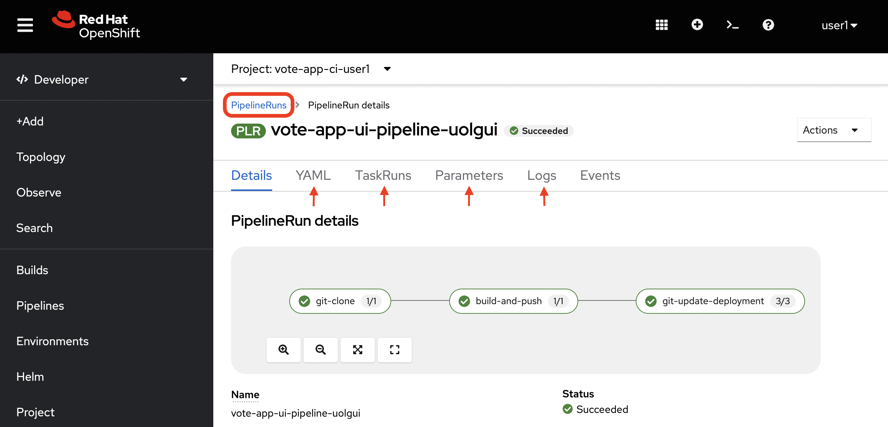 For example, viewing the logs from the build-and-push Task, we can see the output from the build and push actions, which use the Buildah bud command. 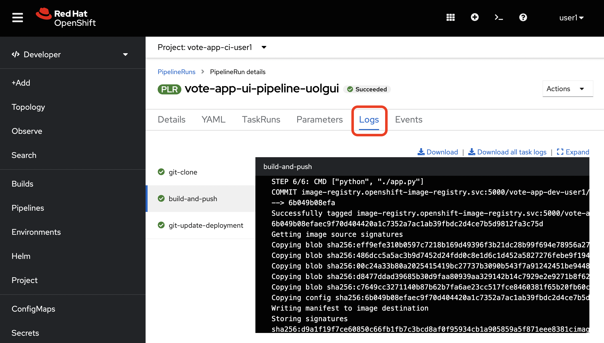 Checking the status of the applications Now that the pipelines have been started let’s check the status of the deployments. Click on the Topology left-hand tab to see the list of deployments that have been created. We now have a new application called Triggers which contains two deployments, one for the vote-api and one for the vote-ui. You can click on a deployment to see the details of the deployment, including the pods that are running, which is an event listener, allowing us to trigger a new build of the application when a change is made to the Git repository. 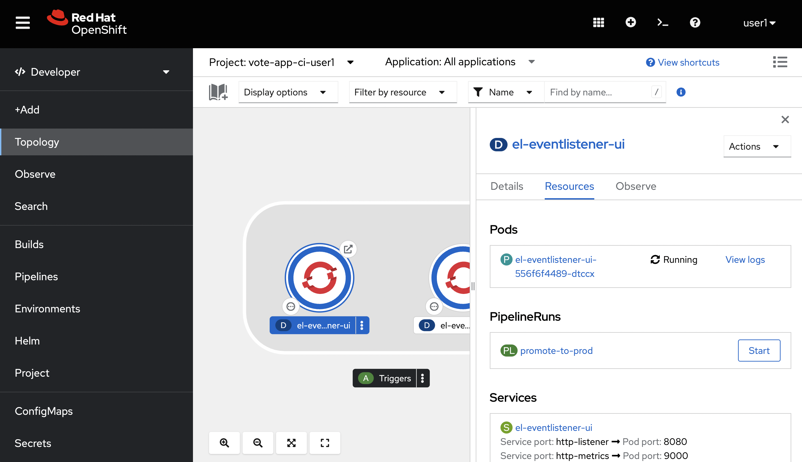 Start vote-ui with a Webhook Tekton supports Triggers to enable automation and webhooks. Now that the vote-ui deployment is running, let’s add a webhook to the Gitea repository to trigger a new build of the application when changes are made to the repository. From the Topology view, click on the el-eventlistener-ui deployment. From there, navigate to the Routes section and copy the el-eventlistener-ui Route URL from the bottom right-hand corner. Once you have the URL copied to your clipboard, navigate to the pipelines-vote-ui code repository that you have on Gitea. From your repository page, click on the Settings menu in the top-right corner. From the top right-side menu, click on Settings, then Webhooks. Then, click on Add Webhook from the right-side menu. Paste the copied Route URL into the Target URL field in the next screen. You can leave the other fields blank; just ensure the Content Type is set to application/json. Finally, click on Add Webhook to create the webhook. 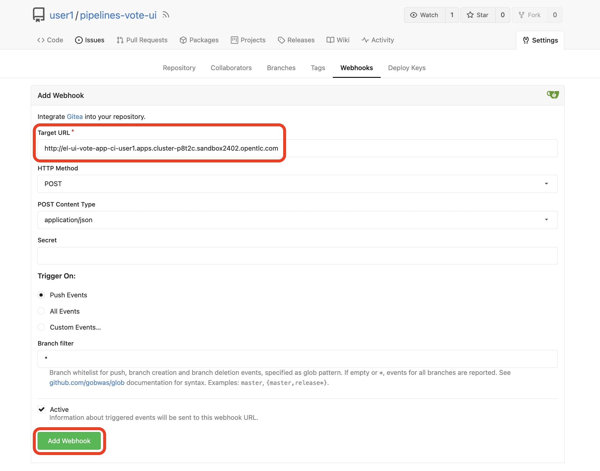 Great, now we have a webhook that will trigger a new build of the application when changes are made to the Git repository. Later on in this module, we’ll make some changes to the source code using OpenShift Dev Spaces and push the changes to the Git repository to trigger a new build. Next Steps Congratulations! You’ve successfully deployed the vote-app and vote-api pipelines using Tekton Pipelines. You’ve also added a webhook to the vote-ui pipeline to trigger a new build when changes are made to the Git repository. Now, let’s move on to the next lab to learn how to deploy the application using Argo CD. Introduction Argo CD